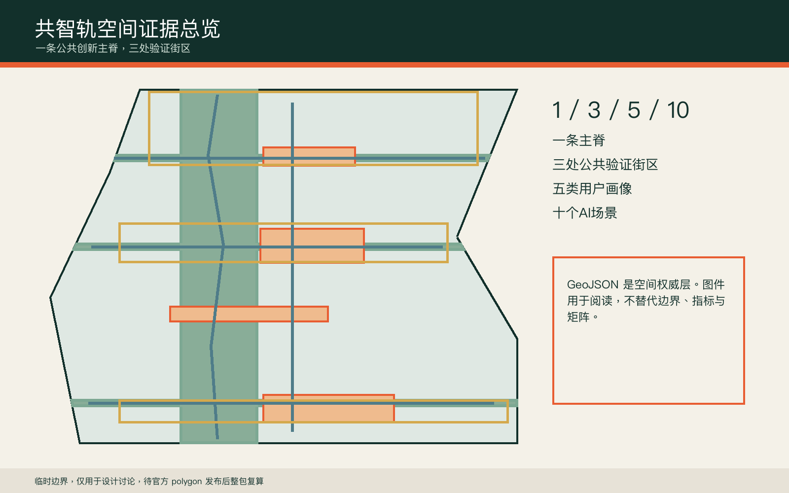
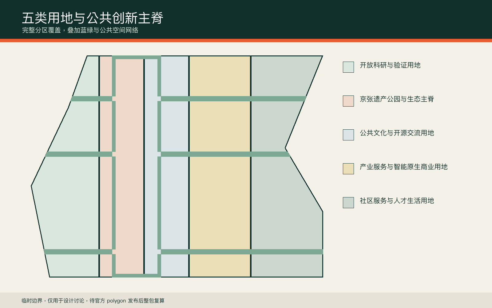
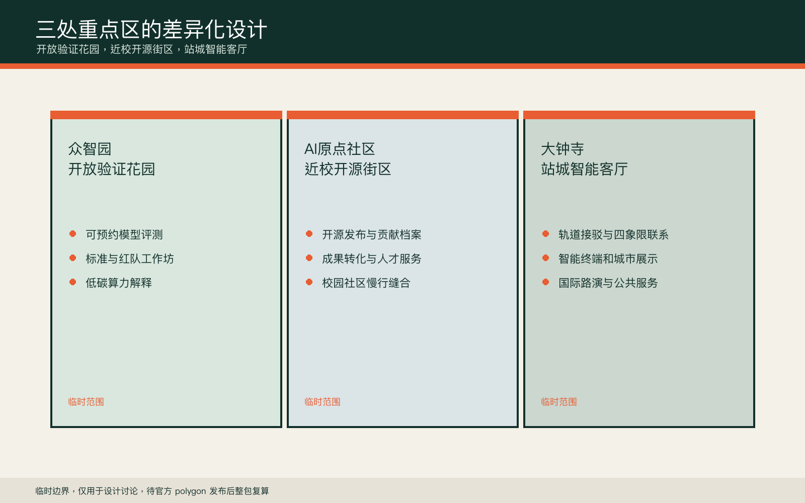
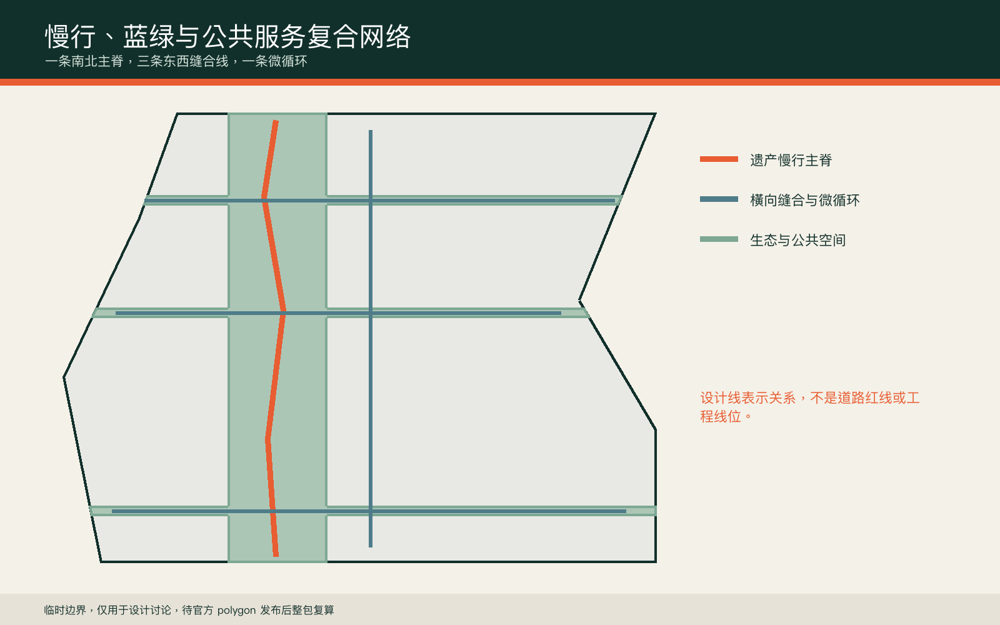
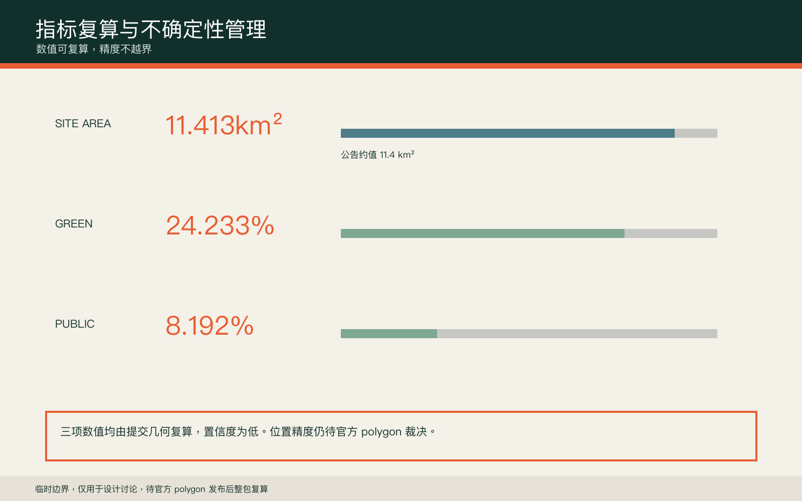

共智轨：百年京张AI公共创新走廊
以京张铁路遗产空间为公共创新主脊，把三处重点片区组织为可验证、可回退、可持续运营的AI城市共同体。
共智轨：百年京张AI公共创新走廊
设计依据与资料清单
方案只使用仓库登记的公开或清权资料。官方公告给出三层范围、三处重点区及约面积，但未公开可验证坐标系的精确红线；因此提交中的边界全部保留为临时约束，不能用于审批、征拆、权属或精确控制判断 来源 来源。专业标准以本地快照为依据，用地代码遵循自然资源部分类指南，AI服务和无障碍场景分别限定在相应法规的适用边界内 标准 标准。
设计包把 GeoJSON 作为空间权威层，把 metrics 和三类矩阵作为复算与合规层，把正文、图件、PDF 与离线网页作为人类阅读层。最重要的数据缺口是官方 polygon、控规、道路红线、现状建筑、权属、市政、消防与文保范围；它们全部进入 assumptions，并触发未来整包重算，而不是被推测值掩盖 深度。

三层范围工作框架
统筹研究范围处理43.6平方公里的创新链与区域协同，总体设计范围处理约11.4平方公里的空间结构与更新方法，重点区域范围处理众智园、AI原点社区和大钟寺三处详细设计。三层并非三套相互独立的图纸，而是一条从产业判断、公共空间到运营验证的责任链 空间数据 指标 深度。
共智轨采用“一脊三室五群十场景”的工作框架。一脊是京张遗产生态与慢行主脊，三室是三处公共验证街区，五群是开发者、科研人员、创业团队、居民和访客，十场景则把AI能力放入可人工复核的日常空间。所有空间动作都是概念建议，临时边界只作为 intake 讨论底图。

统筹研究范围产业与未来城市研究
产业策略不是企业名录，而是“策源、开源、验证、转化、治理”五段循环。众智园承担全栈自主验证和安全治理，AI原点社区承担近校开源与成果转化，大钟寺承担智能原生消费、国际路演与城市展示；中关村科技服务翼提供法务、知识产权、资本和人才服务，小月河场景赋能翼提供日常城市验证 来源 标准。
参考案例采用功能学习而非形式复制：MIT Kendall Square的校企邻近、Toronto MaRS的转化平台、Paris-Saclay的科研网络、Helsinki Jätkäsaari的城市试验、Singapore one-north的产业社区、Barcelona 22@的混合更新。案例只用于提炼公开协作、混合生活和可评估试验三类方法，不据此推导本地投资额或法定指标。
总体设计范围城市更新与控规深度城市设计
总体空间结构把临时边界划分为五类连续用地：开放科研与验证、遗产公园与生态主脊、公共文化与开源交流、产业服务与智能原生商业、社区服务与人才生活。每个分区都从同一 site boundary 裁切，完整覆盖且无相互重叠 空间数据 深度。
更新方法优先识别可适应性再利用的首层、院落、边角地和交通节点，而不是预设拆除。六个催化建筑基底仅用于表达空间类型，包括共享实验室、开放验证工坊、成果转化驿站、贡献者大厅、城市客厅和交通服务节点；它们不对应测绘建筑或权属地块 空间数据 深度。容积率、建筑高度与建筑密度保持待正式数据补齐。
重点区域详细设计
众智园被定义为“开放验证花园”。北部公共验证客厅连接清河方向与科研用地，配置可预约模型评测、红队演练、标准工作坊和低碳算力解释空间。设计控制是低扰动、可撤回和全程人工监督，不对河道蓝线或道路工程作结论 空间数据 深度。
AI原点社区被定义为“近校开源街区”。空间动作是把校园、园区和社区之间的步行断点转译为成果发布厅、贡献者荣誉廊、人才服务节点和晚间协作空间。大钟寺被定义为“站城智能客厅”，围绕轨道接驳提出四象限步行联系、国际路演、智能终端展示和公共服务场景，但任何桥隧、站体改造和地下空间均待专业团队深化 空间数据 空间数据。

AI 创新生态、人才画像与 AI+ 场景
五类用户画像分别是开源开发者、科研人员、初创团队、周边居民和国内外访客。每类人群都同时拥有数字路径与非数字路径：服务必须可解释、可拒绝、可转人工，不能以持续人脸识别或个人轨迹采集作为空间运行前提 标准 标准。
十个场景卡为：开源发布厅、模型安全沙盒、低碳算力解释站、无障碍慢行助手、近校成果转化台、公共服务双通道、铁路记忆数字导览、智能终端城市客厅、活动风险人工复核台、全球AI共同体周。前三项同时构成产业测试验证场景；所有场景都注明概念属性，不代表已批准运营 空间数据 指标。
用地、建筑规模与拆改留方案
用地分区采用仓库允许的国土空间用途代码，并以共享边界保证完整覆盖。绿地与公共空间是叠加的设计网络，不替代法定用地或公园红线。催化建筑仅展示可供专业团队进一步调查的空间原型，现状建筑年代、结构安全、权属与使用状况未公开，因此不得给出具体建筑的保留、改造或拆除结论 标准 空间数据。
后续拆改留判定采用四步法：先做测绘与权属核验，再做结构、消防和能耗检查，然后评估公共价值与产业适配，最后形成多方审查记录。当前指标只计算概念催化基底面积，不计算总建筑规模或容积率 指标 深度。
交通、轨道、市政与公共服务设施
共智轨提出一条南北遗产慢行主脊、三条东西缝合线和一条公共服务微循环。三条横线分别服务众智园、AI原点社区和大钟寺站周边，将慢行、骑行、轨道接驳与公共验证空间放在同一张图上 空间数据 深度。这些线是设计关系，不是道路红线。
市政策略采用“先测量、再试点、可回退”的原则。端侧算力节点与既有公共服务设施共址的建议，必须在能源容量、散热、消防、网络安全与运营责任明确后才能深化。每处AI服务保留人工办理与离线信息，避免技术故障造成基本服务中断 深度。

蓝绿空间、公共空间与城市风貌
蓝绿系统以一条南北生态主脊和三条横向缝合带组成，公共空间则形成众智园验证花园、AI原点开源客厅、大钟寺站城客厅和一处铁路记忆平台。临时模型计算绿地与公共空间比例，用于比较设计取向而非表达法定绿地率 空间数据 指标 指标。
城市风貌采用铁路基础设施的深蓝绿、信号橙和金属灰，导视以“轨枕刻度”组织距离、年份和贡献记录。三个朝圣节点分别是“第一行代码纪念台”“开放模型验证塔”“百年京张贡献者档案馆”。它们是可讨论的品牌与公共艺术原型，需另行完成文保、结构、版权和公众协商。
更新项目清单、实施政策与分期计划
近期阶段优先低成本且可撤回的公共空间试点，包括慢行断点审计、贡献者展示、开源发布活动和公共服务双通道测试。中期阶段在完成现状调查后推进近校转化空间与社区服务节点。远期阶段仅在轨道、市政、文保和权属条件清晰后研究站城协同与大型国际活动 空间数据 深度。
治理采用“城市验证协议”：每个场景须声明问题、数据最小集、人工责任人、退出机制、最长试验期、事故上报和复盘方式。年度活动包括春季开放模型周、夏季城市验证季、秋季全球开发者大会和冬季治理复盘会，均为运营参考方案，不是政府已确定安排 深度。
指标体系、面积复算与合规矩阵
三项核心视觉指标都由提交几何复算：总体设计范围面积约为11.413平方公里，临时模型绿地比例和公共空间比例分别读取 metrics.json。数值与官方公告的约11.4平方公里接近，但边界推定仍存在位置不确定性，不能用面积拟合把临时 polygon 升级为官方红线 指标 指标 指标。
合规矩阵覆盖公告1.3、1.4、1.5与agent.1-agent.6；专业标准矩阵覆盖全部必选标准；设计深度矩阵将控规、交通、市政、蓝绿、实施和风险分别落到正文、图层、指标和图纸。任何官方控制项缺失时使用“待正式数据补齐”，不以视觉上的精确数字制造确定性 深度。

风险、版权与合规说明
主要风险包括临时边界位置偏差、控规和权属缺失、现状建筑未知、市政与消防条件未知、文保范围未知，以及AI场景的隐私、偏差和可用性风险。对应措施是整包复算触发器、专业前置核验、人工复核、数据最小化、非数字服务路径和试验期退出机制 深度 空间数据。
图件由本方案 GeoJSON、指标和自编排程序生成，概念封面由图像生成模型制作并明确为合成示意。没有使用未经授权的企业商标、人物肖像、遥感影像或新闻图片。方案是开放共创建议，不替代正式规划，不构成政府审定结论、投资承诺、工程可行性判断或实施保证 来源。
参考资料
核心资料包括海淀分局官方征集公告、用户清权的智能体任务书摘录、城市设计管理办法、控制性详细规划编制审批办法、国土空间用途分类指南、无障碍环境建设法、生成式人工智能服务管理暂行办法，以及仓库临时边界推定说明。正式来源、发布日期、许可、允许用途和限制完整保存在 sources.json 与标准矩阵 来源 来源。
本方案不把 OSM 背景核查用于正式边界或面积依据。官方 polygon、正式控规、道路红线、文保、市政、权属和现状建筑资料到位后，应从 site boundary 开始重建全部图层、指标、图件、HTML 与 PDF，并重新运行四道自检。